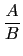
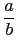
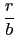

suivant: Numérateur d'une fraction après
monter: Les rationnels
précédent: Transformer un nombre décimal
Table des matières
Index
Partie entière et fractionnaire : propfrac propFrac
propfrac(A/B) ou propFrac(A/B) écrit la fraction
 après simplification en
 (avec
gcd(a, b) = 1) sous la forme :
q +  avec 0
 r
r <
b
Pour les fractions rationnelles on se reportera à 6.29.8.
On tape :
propfrac(42/15)
On obtient :
2+4/5
On tape :
propfrac(43/12)
On obtient :
3+7/12
Documentation de giac écrite par Renée De Graeve